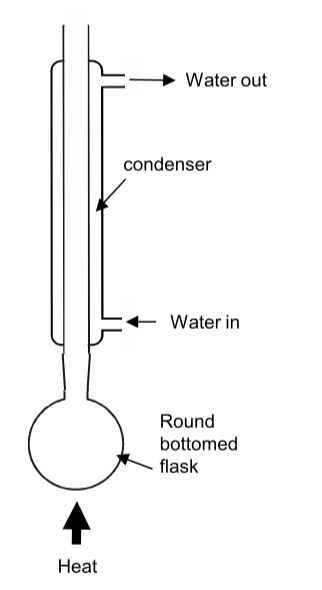
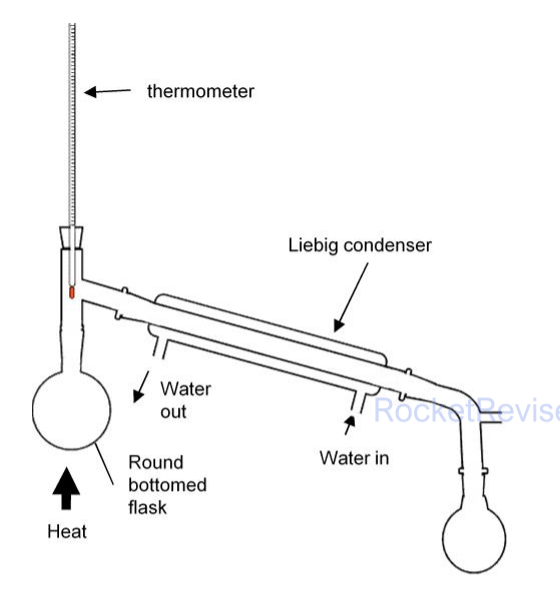

Halogenoalkanes, alcohols and spectra
Swap one hydrogen in an alkane for a halogen or an –OH group and the molecule suddenly has a polar bond that other species can attack. This topic follows what happens next: how halogenoalkanes are substituted or lose HX to give alkenes, how alcohols are oxidised, halogenated and dehydrated, how the products are separated and purified in the lab, and how mass spectra and infrared spectra tell you which molecule you have made.
Halogenoalkanes: names and classes
A halogenoalkane is an alkane in which one or more hydrogen atoms have been replaced by halogen atoms. The name is built on the longest carbon chain, with a prefix for each halogen: fluoro-, chloro-, bromo- or iodo-. Number the chain from the end that gives the substituents the lowest numbers, and write the prefixes in alphabetical order (bromo before chloro before methyl). Multiplying prefixes such as di- and tri- are ignored when you put the prefixes in order.
- CH3CH2CH2Br: 1-bromopropane
- CH3CHClCH3: 2-chloropropane
- (CH3)3CBr: 2-bromo-2-methylpropane
- CH3CHBrCHClCH3: 2-bromo-3-chlorobutane (b comes before c, and numbering from either end gives 2 and 3, so bromo, first alphabetically, takes the lower number)
- CH2BrCH2Br: 1,2-dibromoethane
Halogenoalkanes are classified by looking at the carbon atom that carries the halogen and counting how many other carbon atoms are bonded to it. This matters because, as you will see, the class changes both the mechanism and the speed of the reactions.
Halogenoalkanes are polar molecules but they cannot form hydrogen bonds with water, so they do not mix with it. Their boiling temperatures rise with chain length and from chloro to bromo to iodo, because bigger molecules with more electrons have stronger London forces between them. Branched isomers boil lower than straight-chain ones because their molecules touch over a smaller area.
Why halogenoalkanes react: the polar C–X bond
Every halogen is more electronegative than carbon, so the bonding pair in the C–X bond is pulled towards the halogen. The carbon becomes slightly positive (δ+) and the halogen slightly negative (δ−). That electron-poor carbon is a target for nucleophiles.
A nucleophile is a species that donates a lone pair of electrons to form a new covalent bond. Important nucleophiles in this topic are the hydroxide ion, :OH−, the cyanide ion, :CN−, ammonia, :NH3, and water, H2O:.
In a nucleophilic substitution the nucleophile replaces the halogen, which leaves as a halide ion, X−. The C–X bond breaks heterolytically: both electrons of the bond go to the halogen.
A curly arrow shows the movement of a pair of electrons. It always starts from a lone pair or from the middle of a bond, and its head points to where the pair ends up: an atom (forming a new bond) or an atom that leaves with the pair (breaking a bond).
Bond strength decides the rate
You might expect the most polar bond, C–F, to react fastest because its carbon is the most positive. Experiments show the opposite. The step that controls the rate is breaking the C–X bond, and the bonds get weaker down the group: as the halogen atom gets bigger, the shared pair of electrons is further from its nucleus and is held less strongly.
| Bond | Mean bond enthalpy / kJ mol−1 | Rate of substitution |
|---|---|---|
| C–F | 467 | so slow that fluoroalkanes are effectively unreactive |
| C–Cl | 346 | slow |
| C–Br | 290 | faster |
| C–I | 228 | fastest |
Nucleophilic substitution reactions
The same pattern works for every nucleophile: the lone pair attacks the δ+ carbon, the C–X bond breaks and the halide ion leaves. What changes is the product, and the solvent and conditions chosen to make that product.
| Reagent and conditions | Role of the reagent | Product from 1-bromopropane |
|---|---|---|
| KOH or NaOH dissolved in water, heat under reflux | nucleophile, OH− | propan-1-ol, CH3CH2CH2OH |
| water, with aqueous silver nitrate and ethanol, warm | nucleophile, H2O (hydrolysis) | propan-1-ol, and a precipitate of AgBr |
| KCN dissolved in ethanol, heat under reflux | nucleophile, CN− | butanenitrile, CH3CH2CH2CN |
| excess concentrated NH3 in ethanol, heat in a sealed tube | nucleophile, NH3 | propylamine (propan-1-amine), CH3CH2CH2NH2 |
With aqueous hydroxide ions: making alcohols
Heating a halogenoalkane under reflux with aqueous potassium or sodium hydroxide replaces the halogen with –OH:
CH3CH2CH2Br + OH− → CH3CH2CH2OH + Br− or CH3CH2CH2Br + KOH → CH3CH2CH2OH + KBr
The hydroxide ion carries a full negative charge, so it is attracted far more strongly to the δ+ carbon than a neutral water molecule is. That is why OH− substitutes much faster than water does. For a primary halogenoalkane the whole change happens in one step:
For full marks in a mechanism: show the δ+ and δ− on the C–Br bond, a lone pair on the nucleophile, an arrow from that lone pair to the carbon, an arrow from the C–Br bond to the bromine, and the products including the halide ion. Make sure the first arrow starts at the lone pair, not at the minus sign.
With cyanide ions: making nitriles
Warming a halogenoalkane under reflux with potassium cyanide dissolved in ethanol gives a nitrile. The cyanide ion attacks through the lone pair on its carbon atom, so the reaction adds one carbon to the chain, which makes it useful in synthesis:
CH3CH2CH2Br + CN− → CH3CH2CH2CN + Br− (1-bromopropane gives butanenitrile: four carbons, counting the one in –C≡N)
The mechanism is the same as with hydroxide: an arrow from the lone pair on the carbon of :C≡N− to the δ+ carbon, and an arrow from the C–Br bond to Br. Potassium cyanide is extremely toxic, so it is handled in a fume cupboard and never acidified (that would release HCN gas).
With ammonia: making amines
Ammonia's lone pair on nitrogen lets it act as a nucleophile too. The halogenoalkane is heated with an excess of concentrated ammonia in ethanol in a sealed tube. Ammonia is a gas that would simply boil out of an open flask, so sealing the tube keeps its concentration high; the pressure inside rises as it is heated.
CH3CH2CH2Br + 2NH3 → CH3CH2CH2NH2 + NH4Br
The lone pair on the nitrogen of NH3 attacks the δ+ carbon, and the C–Br bond breaks heterolytically. Nitrogen now has four bonds and no lone pair, so it carries a positive charge: the product of this step is the propylammonium ion, CH3CH2CH2NH3+, plus Br−.
A second ammonia molecule acts as a base. Its lone pair removes H+ from the N–H bond of the ammonium ion, and the electrons of that N–H bond return to nitrogen as a lone pair.
The ammonium ion and the bromide ion end up together as ammonium bromide, NH4Br, which is why two moles of ammonia appear in the overall equation.
The amine product still has a lone pair on nitrogen, so it is a nucleophile as well. It can attack another halogenoalkane molecule to form a secondary amine, then a tertiary amine, and finally a quaternary ammonium salt. Using a large excess of ammonia makes it far more likely that a halogenoalkane molecule meets an ammonia molecule than an amine molecule, which keeps these further substitutions, and the loss of yield they cause, to a minimum.
Comparing rates of hydrolysis
Hydrolysis means splitting a molecule by reaction with water. Water is a weak nucleophile, but warm halogenoalkanes do react with it slowly:
R–X + H2O → R–OH + H+ + X−
If silver nitrate solution is present, each halide ion released is caught straight away as an insoluble silver halide, Ag+(aq) + X−(aq) → AgX(s). The silver ions do not attack the halogenoalkane themselves; they just reveal how fast the halide ions are being set free. So the sooner a precipitate appears, the faster the hydrolysis. Ethanol is added as a solvent that mixes with both the halogenoalkane and the aqueous silver nitrate, so the reactants are in one phase.
Investigating the rates of hydrolysis of halogenoalkanes
Put equal volumes of ethanol and aqueous silver nitrate into a set of test tubes and stand them in a water bath at about 50 °C. Add the same number of drops of each halogenoalkane at the same moment and time how long each takes to form a precipitate.
- Changing the halogen (1-chlorobutane, 1-bromobutane, 1-iodobutane): the iodo compound gives a yellow precipitate of AgI first, then the bromo compound gives cream AgBr, and the chloro compound gives white AgCl last. This follows the C–X bond enthalpies: C–I is the weakest bond and breaks most easily.
- Changing the structure (1-bromobutane, 2-bromobutane, 2-bromo-2-methylpropane): the tertiary compound reacts fastest and the primary slowest, because tertiary halogenoalkanes react through a stable carbocation (the SN1 route below).
- Fair test: keep the temperature, the volumes and the amount of each halogenoalkane the same, and change only one feature at a time. When comparing halogens, keep the carbon skeleton the same.
- Safety: ethanol and many halogenoalkanes are flammable, so heat with a water bath and no naked flame. Silver nitrate stains skin; wear gloves and eye protection.
Don't explain the halogen order using polarity or electronegativity. C–F is the most polar bond, yet fluoroalkanes are the slowest to react. The deciding factor is bond enthalpy: the weaker the C–X bond, the faster it breaks.
SN2 and SN1: primary versus tertiary
Nucleophilic substitution can happen in two different ways, and which one a halogenoalkane uses depends on its class. The names say what happens: Substitution, Nucleophilic, and the number of species involved in the slowest (rate-determining) step.
- SN2 (primary halogenoalkanes): one step. The nucleophile attacks as the C–X bond breaks, passing through a transition state containing both the halogenoalkane and the nucleophile. The rate depends on both concentrations: rate = k[RX][OH−].
- SN1 (tertiary halogenoalkanes): two steps. First the C–X bond breaks on its own to give a carbocation and a halide ion (slow). Then the nucleophile attacks the carbocation (fast). Only the halogenoalkane is in the slow step: rate = k[RX].
- Secondary halogenoalkanes can react by either route, and often use a mixture of both.
Why does structure decide the route? Two effects work together.
- Carbocation stability: alkyl groups push electron density towards a neighbouring positive carbon (a positive inductive effect), spreading out its charge. A tertiary carbocation has three alkyl groups doing this and is stable enough to form; a primary carbocation has only one and is too unstable, so primary halogenoalkanes cannot take the SN1 route.
- Crowding: in SN2 the nucleophile must reach the carbon from the side opposite the halogen. Three bulky methyl groups on a tertiary carbon block that approach, while the small hydrogen atoms on a primary carbon leave it open.
Tertiary halogenoalkanes hydrolyse fastest because their route, through a stabilised tertiary carbocation, has a lower activation energy than the routes open to secondary and primary halogenoalkanes. That is why the order of reactivity in the silver nitrate experiment is tertiary > secondary > primary.
Elimination: making alkenes
Change the solvent and the same reagent does something different. Heated under reflux with potassium hydroxide dissolved in ethanol, a halogenoalkane loses a hydrogen halide and forms an alkene. Here the hydroxide ion acts as a base: it removes an H+ from a carbon next to the C–X carbon, a C=C double bond forms between those two carbons, and the halide ion leaves.
CH3CH2CH2Br + KOH → CH3CH=CH2 + KBr + H2O
| KOH in water | KOH in ethanol | |
|---|---|---|
| Role of OH− | nucleophile | base |
| Type of reaction | nucleophilic substitution | elimination |
| Organic product | alcohol | alkene |
| Favoured by | primary halogenoalkanes, lower temperature | tertiary halogenoalkanes, higher temperature |
In practice both reactions compete and you usually get a mixture; the conditions just tip the balance. If the halogen is not on the end of an unsymmetrical chain, the hydrogen can be removed from a carbon on either side, so more than one alkene forms. 2-Bromobutane gives three products, because but-2-ene has E and Z isomers:
Alcohols: names, classes and shape
Alcohols contain the hydroxyl group, –OH, and the open-chain ones with one –OH have the general formula CnH2n+1OH. Their names end in -ol, with a number showing where the –OH is: butan-2-ol is CH3CH(OH)CH2CH3. With two or three –OH groups, keep the "e" of the alkane name and add -diol or -triol: ethane-1,2-diol (HOCH2CH2OH) and propane-1,2,3-triol (glycerol). When the molecule has a group that takes the suffix, such as a carboxylic acid, the –OH becomes the prefix hydroxy-: CH3CH(OH)COOH is 2-hydroxypropanoic acid.
Alcohols are classified exactly like halogenoalkanes, by counting the carbon atoms bonded to the carbon that carries the –OH:
- Primary: propan-1-ol, CH3CH2CH2OH (one carbon attached; methanol, with none, behaves like a primary alcohol)
- Secondary: propan-2-ol, CH3CH(OH)CH3 (two carbons attached)
- Tertiary: 2-methylpropan-2-ol, (CH3)3COH (three carbons attached)
Around each carbon there are four bonding pairs, so the bonds are arranged tetrahedrally at about 109.5°. The oxygen has two bonding pairs and two lone pairs. Lone pairs repel more strongly than bonding pairs, so they squeeze the C–O–H angle down to about 104.5°, giving a bent shape like water.
The O–H group lets alcohol molecules hydrogen bond to one another, so alcohols boil far higher than alkanes of similar mass, and the small ones mix completely with water. Branching lowers the boiling temperature, as for halogenoalkanes: butan-1-ol boils at 118 °C but its more compact isomer 2-methylpropan-2-ol boils at 82 °C.
Reactions of alcohols
Combustion
Alcohols burn in plenty of air with a clean, almost colourless flame to give carbon dioxide and water, which is why ethanol is used as a fuel:
C2H5OH(l) + 3O2(g) → 2CO2(g) + 3H2O(l)
Halogenation: swapping –OH for a halogen
The –OH group can be replaced by a halogen, turning the alcohol into a halogenoalkane. Different reagents are used for each halogen.
| Halogen | Reagent | Equation (ethanol) |
|---|---|---|
| Cl | phosphorus(V) chloride, PCl5, at room temperature | C2H5OH + PCl5 → C2H5Cl + POCl3 + HCl |
| Cl (tertiary alcohols) | concentrated hydrochloric acid, shaken at room temperature | (CH3)3COH + HCl → (CH3)3CCl + H2O |
| Br | potassium bromide and 50% concentrated sulfuric acid, which make HBr in the flask | KBr + H2SO4 → KHSO4 + HBr C2H5OH + HBr → C2H5Br + H2O |
| I | red phosphorus and iodine, warmed, which make phosphorus(III) iodide in the flask | 2P + 3I2 → 2PI3 3C2H5OH + PI3 → 3C2H5I + H3PO3 |
The reaction with PCl5 gives off steamy fumes of hydrogen chloride, which turn damp blue litmus red and form white smoke with ammonia. This is a test for an –OH group. It only works on a dry sample, because water and carboxylic acids contain –OH and give the same fumes.
Why not make HBr or HI from the salt and fully concentrated sulfuric acid? Concentrated H2SO4 is an oxidising agent: it oxidises some bromide to bromine and almost all iodide to iodine (Topic 8). Diluting it to about 50% reduces the oxidation for bromide, and for iodide a different route through PI3 is used.
Oxidation with acidified potassium dichromate(VI)
Potassium dichromate(VI), K2Cr2O7, acidified with dilute sulfuric acid oxidises primary and secondary alcohols. As it does so, the orange dichromate(VI) ion, Cr2O72−, is reduced to the green chromium(III) ion, Cr3+. Equations use [O] to stand for oxygen supplied by the oxidising agent.
Oxidation removes two hydrogen atoms: the one on the –OH and one from the carbon carrying the –OH. A C=O bond forms in their place. This is why the class of alcohol matters so much.
| Alcohol | Conditions | Product | Equation |
|---|---|---|---|
| primary | limited oxidising agent (alcohol in excess); warm gently and distil off the product as it forms | aldehyde | CH3CH2CH2OH + [O] → CH3CH2CHO + H2O |
| primary | excess oxidising agent; heat under reflux | carboxylic acid | CH3CH2CH2OH + 2[O] → CH3CH2COOH + H2O |
| secondary | heat under reflux | ketone | CH3CH(OH)CH3 + [O] → CH3COCH3 + H2O |
| tertiary | heat under reflux | no reaction: the solution stays orange | — |
A tertiary alcohol has no hydrogen atom on the carbon bonded to the –OH, so a C=O bond cannot form without breaking a C–C bond, and dichromate cannot do that. A ketone is not oxidised further for the same reason. An aldehyde still has a hydrogen on its C=O carbon, so it is easily oxidised on to a carboxylic acid.
So how do you stop at the aldehyde? Use boiling temperatures. Propanal (49 °C) has no O–H group, so its molecules cannot hydrogen bond to each other, and it boils far lower than propan-1-ol (97 °C) or propanoic acid (141 °C). Gentle warming in a distillation apparatus lets the aldehyde escape the flask as soon as it forms, before it meets more oxidising agent. Heating under reflux does the opposite: everything is returned to the flask until it has all been oxidised to the acid.
Aldehyde names end in -al and the C=O is always on carbon 1, so no number is needed (propanal, CH3CH2CHO; write CHO, never COH). Ketone names end in -one with a number when the chain is long enough to need one (propanone, but pentan-2-one and pentan-3-one).
Telling the products apart
| Test | Positive result | What it shows |
|---|---|---|
| warm with Fehling's or Benedict's solution | blue solution gives a red precipitate of copper(I) oxide, Cu2O | aldehyde (ketones give no change) |
| add sodium hydrogencarbonate or sodium carbonate | effervescence; the gas turns limewater cloudy | carboxylic acid |
| warm with acidified K2Cr2O7 | orange to green | primary or secondary alcohol (or aldehyde) |
| add PCl5 to the dry sample | steamy fumes of HCl | –OH group (alcohol or carboxylic acid) |
The Fehling's and Benedict's tests work because an aldehyde can be oxidised and a ketone cannot. The Cu2+ ions in the alkaline blue solution oxidise the aldehyde and are themselves reduced to copper(I):
CH3CHO + 2Cu2+ + 5OH− → CH3COO− + Cu2O + 3H2O
Dehydration: making alkenes
Heating an alcohol with concentrated phosphoric(V) acid, H3PO4, removes a molecule of water and gives an alkene. The acid is a catalyst and dehydrating agent, and the reaction is an acid-catalysed elimination. The alkene, with its much lower boiling temperature, can be distilled off as it forms.
CH3CH2CH2OH → CH3CH=CH2 + H2O
As with halogenoalkanes, an –OH group in the middle of an unsymmetrical chain can lose a hydrogen from either neighbouring carbon. Butan-2-ol gives but-1-ene and both E- and Z-but-2-ene. Making alkenes this way from ethanol produced by fermentation gives a route to polymers such as poly(ethene) that does not depend on crude oil.
Practical techniques for organic liquids
Heating under reflux
Many organic reactions are slow and their reactants are volatile and flammable. Heating under reflux lets you heat a mixture for a long time without losing anything: a vertical condenser turns the vapours back into liquid, which drips back into the flask.

- Never seal the top of the condenser. Heating a closed system builds up pressure until the apparatus bursts.
- Anti-bumping granules give the liquid many small places to form bubbles, so it boils smoothly instead of in sudden violent bursts.
- Heat electrically (a heating mantle or water bath), not with a Bunsen flame, because most organic liquids catch fire easily.
Distillation
Distillation separates a liquid from a mixture by boiling it off and condensing the vapour somewhere else. It is used to remove a product as it forms (the aldehyde above) and to purify a liquid at the end.

- The thermometer bulb must be level with the side arm, so it measures the vapour leaving the flask, not the liquid boiling below.
- Collect only the fraction that distils within a degree or two of the product's boiling temperature.
- Water enters the condenser at the lower end so the jacket stays full of cold water.
- When drawing apparatus, don't draw lines across the joints between flask, still head and condenser (that would mean they were sealed off), and draw the condenser's water jacket as a closed outer tube with two open water connections.
Separating, washing and drying
- Separating funnel: two liquids that don't mix form two layers. Run off the lower, denser layer through the tap and keep whichever layer holds your product. If you are not sure which layer is which, add a little water and see which one gets bigger.
- Washing: shake the organic layer with sodium hydrogencarbonate solution to neutralise any acid left in it. CO2 forms, so invert the funnel and open the tap often to release the pressure. Washing with water or saturated sodium chloride solution removes water-soluble impurities.
- Drying: add an anhydrous salt such as anhydrous sodium sulfate, magnesium sulfate or calcium chloride, swirl, and leave until the liquid is clear and the solid no longer clumps. A drying agent must absorb water without dissolving in or reacting with the product. Then decant or filter the liquid off.
- Solvent extraction: shaking a mixture with a solvent that dissolves the product better (iodine moves from water into cyclohexane, for example) concentrates it in one layer, which can then be separated and distilled.
- Boiling temperature: a pure liquid boils at a fixed, known temperature, so measuring it is a check on purity and identity. It is not proof on its own, since different liquids can share a boiling temperature, and it changes with atmospheric pressure.
Chlorination of 2-methylpropan-2-ol with concentrated hydrochloric acid
Shake 2-methylpropan-2-ol with concentrated hydrochloric acid in a separating funnel for several minutes, releasing the pressure often. Tertiary alcohols react quickly at room temperature, and 2-chloro-2-methylpropane forms as an upper layer that does not mix with the aqueous acid.
- Run off and discard the lower aqueous layer.
- Shake the organic layer with sodium hydrogencarbonate solution to remove leftover acid, releasing the CO2 pressure, and discard the aqueous layer again.
- Dry the product with anhydrous sodium sulfate, decant it into a clean flask and distil, collecting the fraction that boils at about 50–52 °C.
- Safety: concentrated HCl is corrosive and gives off choking fumes, so work in a fume cupboard with eye protection. The product is very flammable.
Oxidation of propan-1-ol to propanal and propanoic acid
To make propanal: warm propan-1-ol gently in a distillation apparatus and add the acidified dichromate(VI) a drop at a time, so that the alcohol is always in excess and the propanal distils off as soon as it forms. Keep the receiver cool, since propanal boils at only 49 °C.
To make propanoic acid: heat propan-1-ol with an excess of acidified dichromate(VI) under reflux for about 20 minutes, then rearrange the apparatus for distillation and distil off the acid.
In both cases the mixture turns from orange to green. Test the products: propanal gives a red precipitate with Fehling's solution; propanoic acid fizzes with sodium hydrogencarbonate.
Mass spectra of organic compounds
In a mass spectrometer, a sample molecule M is hit by high-energy electrons, which knock one electron out of it. That leaves a positive ion with an unpaired electron, the molecular ion:
M(g) → [M]+•(g) + e− for example CH3CH2CH2OH → [CH3CH2CH2OH]+• + e−
The dot shows the unpaired electron and is often left out. The ion has a charge of +1, so its m/z value equals its mass. The molecular ion peak, normally the peak with the highest m/z, therefore gives the relative molecular mass of the compound.
Fragmentation
Many molecular ions have so much excess energy that a covalent bond breaks. One piece keeps the positive charge and the other becomes an uncharged free radical:
[M]+• → X+ + Y•
Only charged particles are deflected and detected, so the spectrum shows X+ but never Y•. Fragment ions that are relatively stable, such as carbocations stabilised by alkyl groups and acylium ions [RCO]+, form most often and give the tallest peaks. The tallest peak of all is called the base peak.
| m/z | Common fragment ion |
|---|---|
| 15 | CH3+ |
| 29 | C2H5+ or CHO+ |
| 31 | CH2OH+ (typical of primary alcohols) |
| 43 | C3H7+ or CH3CO+ |
| 45 | COOH+, or CH3CHOH+ from some secondary alcohols |
| 57 | C4H9+ or C2H5CO+ |
Structural isomers have the same molecular ion but break up in different places, so their fragments tell them apart. Pentan-2-one and pentan-3-one both have Mr = 86. Only pentan-2-one has a CH3–C=O group, so only it gives a large peak at m/z = 43:
[CH3COCH2CH2CH3]+• → [CH3CO]+ + •CH2CH2CH3 (m/z = 43)
Pentan-3-one has an ethyl group on each side of the C=O, so it gives [CH3CH2CO]+ at m/z = 57 and CH3CH2+ at m/z = 29 instead:
[CH3CH2COCH2CH3]+• → [CH3CH2CO]+ + •CH2CH3 (m/z = 57)
When asked to identify a peak, give the formula of the ion with its positive charge, for example [CH3CO]+. A fragmentation equation must show the ion on one side and a radical (uncharged) on the other.
Infrared spectroscopy
Covalent bonds are not rigid: they constantly stretch and bend. Each kind of bond vibrates at its own natural frequency, which depends on the masses of the atoms and the strength of the bond. When infrared radiation of exactly that frequency shines on the molecule, the bond absorbs it and vibrates more strongly. An infrared spectrometer passes a range of IR frequencies through a sample and records how much of each gets through. Dips (troughs) in the transmittance show which bonds are present.
Positions are given as wavenumbers, the number of waves per centimetre, \( \tilde{\nu} = 1/\lambda \), in cm−1. A bigger wavenumber means a higher frequency. Strong bonds and bonds to light hydrogen atoms absorb at high wavenumbers.
A vibration absorbs IR only if it changes the polarity (dipole) of the molecule. C=O, O–H, N–H and C–H bonds all do. A molecule made of two identical atoms, such as N2, O2 or H2, has no dipole however it stretches, so it does not absorb IR at all.
| Bond | Where it occurs | Wavenumber / cm−1 | Appearance |
|---|---|---|---|
| O–H | alcohols | 3200–3600 | broad, because of hydrogen bonding |
| O–H | carboxylic acids | 2500–3300 | very broad, often overlapping the C–H peaks |
| N–H | amines | 3300–3500 | medium, sharper than O–H |
| C–H | almost all organic compounds | 2850–3100 | sharp |
| C≡N | nitriles | 2200–2260 | sharp, medium |
| C=O | aldehydes, ketones, carboxylic acids, esters | 1680–1750 | strong and sharp |
| C=C | alkenes | 1620–1680 | weak to medium |
| C–O | alcohols, acids, esters | 1000–1300 | strong, in the fingerprint region |
These ranges are approximate; in the exam, always quote the range from the data booklet you are given. Above about 1500 cm−1 the troughs are few and easy to assign, so this is the region for identifying functional groups. Below 1500 cm−1 lies the fingerprint region: a complicated pattern of bending and skeletal vibrations that is unique to each compound. A computer can match it against a database of known spectra to identify the substance exactly.
Following a reaction by IR: oxidising propan-1-ol to propanal makes the broad O–H trough at 3200–3600 cm−1 disappear and a strong C=O trough appear near 1730 cm−1. Going on to propanoic acid brings back a very broad O–H trough, now at 2500–3300 cm−1, alongside the C=O.
Infrared absorption and the greenhouse effect
The Earth's surface, warmed by sunlight, radiates energy back out as infrared. Bonds in molecules of carbon dioxide, water vapour and methane absorb some of this IR in exactly the way described above, then re-emit it in all directions, some back towards the ground. This traps energy in the lower atmosphere, so these are greenhouse gases. Nitrogen and oxygen, which make up 99% of dry air, cannot absorb IR because their vibrations never change their polarity. Carbon dioxide is non-polar overall, but its asymmetric stretching and bending vibrations do create a temporary dipole, so it absorbs strongly.
Quick checks
What is the name of CH3CHClCBr(CH3)CH3?
The longest chain has four carbons (butane). Numbering from the end nearest the Br gives the substituents positions 2, 2 and 3 rather than 2, 3 and 3. The prefixes then go in alphabetical order: bromo, chloro, methyl. Putting chloro first ignores the alphabetical rule.
1-Chlorobutane, 1-bromobutane and 1-iodobutane are warmed with aqueous silver nitrate in ethanol. Which statement explains the order in which the precipitates appear?
Water is the nucleophile, and breaking the C–X bond controls the rate. C–I (about 228 kJ mol−1) is much weaker than C–Cl (346 kJ mol−1), so the yellow AgI appears first. Polarity predicts the wrong order: C–Cl is more polar than C–I, yet slower.
The rate equation for the hydrolysis of a halogenoalkane by hydroxide ions is rate = k[RBr]. Which halogenoalkane is it most likely to be?
A rate that does not depend on [OH−] means hydroxide is not in the slow step: the SN1 route, where the C–Br bond breaks first to give a carbocation. Only the tertiary compound forms a stable enough carbocation. 1-Bromo-2-methylpropane is branched, but the carbon carrying the Br has only one other carbon on it, so it is primary.
2-Bromopropane is heated under reflux with potassium hydroxide dissolved in ethanol. What is the main organic product and what is the role of the hydroxide ion?
In ethanol the hydroxide ion removes an H+ from the carbon next to the C–Br carbon, so it acts as a base and an alkene forms by elimination. In water it would act as a nucleophile and give the alcohol.
Which alcohol does not change the colour of acidified potassium dichromate(VI) when heated with it?
2-Methylpropan-2-ol is tertiary: the carbon carrying the –OH has no hydrogen, so no C=O can form and the dichromate stays orange. 2-Methylpropan-1-ol is branched but primary (its –OH carbon has two hydrogens), so it is oxidised.
Why is propanal distilled off as it forms when propan-1-ol is oxidised?
An aldehyde is easily oxidised to a carboxylic acid. Propanal boils at 49 °C, well below the alcohol and the acid, because its molecules cannot hydrogen bond to each other, so it can be removed from the hot mixture as soon as it is made.
An IR spectrum has a strong, sharp absorption at 1715 cm−1 and no absorption between 2500 and 3600 cm−1 apart from sharp peaks near 2950 cm−1. The compound has Mr = 58. What is it?
The C=O trough at 1715 cm−1 rules out the alcohols, and the absence of any broad O–H trough rules out the acid (and the alcohols). Propanone, CH3COCH3, has Mr = 58. Prop-2-en-1-ol has the same Mr but would show a broad alcohol O–H trough and no C=O.
Which gas in the atmosphere does not absorb infrared radiation?
A bond absorbs IR only if its vibration changes the polarity of the molecule. N≡N joins two identical atoms, so stretching it never creates a dipole. CO2 is non-polar overall, but its asymmetric stretch and bending vibrations do produce a dipole, so it absorbs.